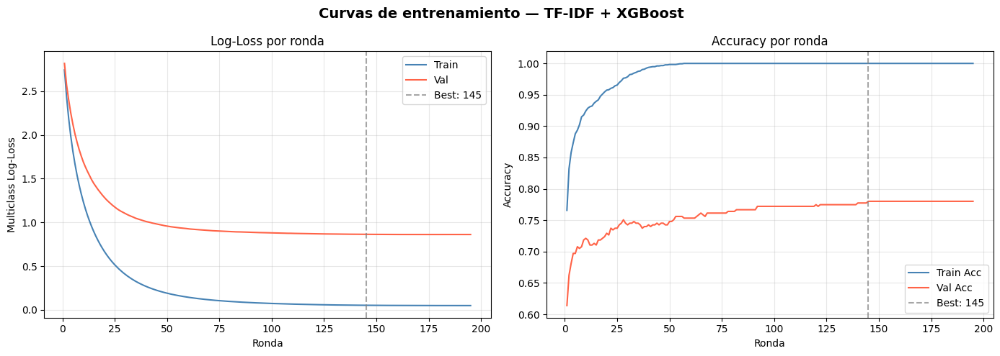
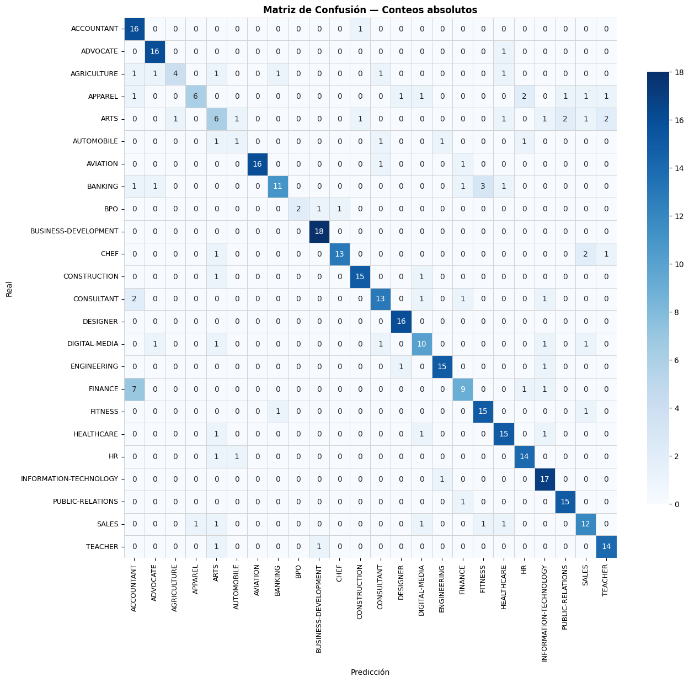
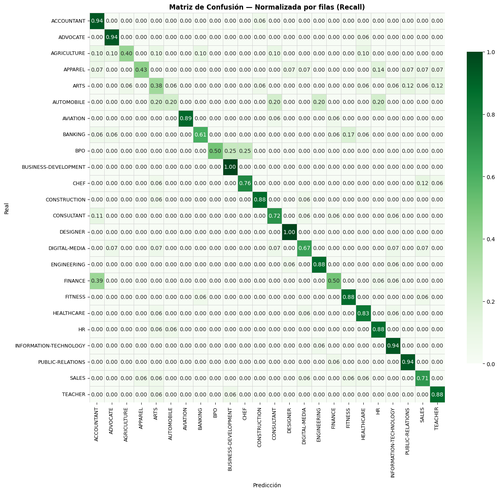
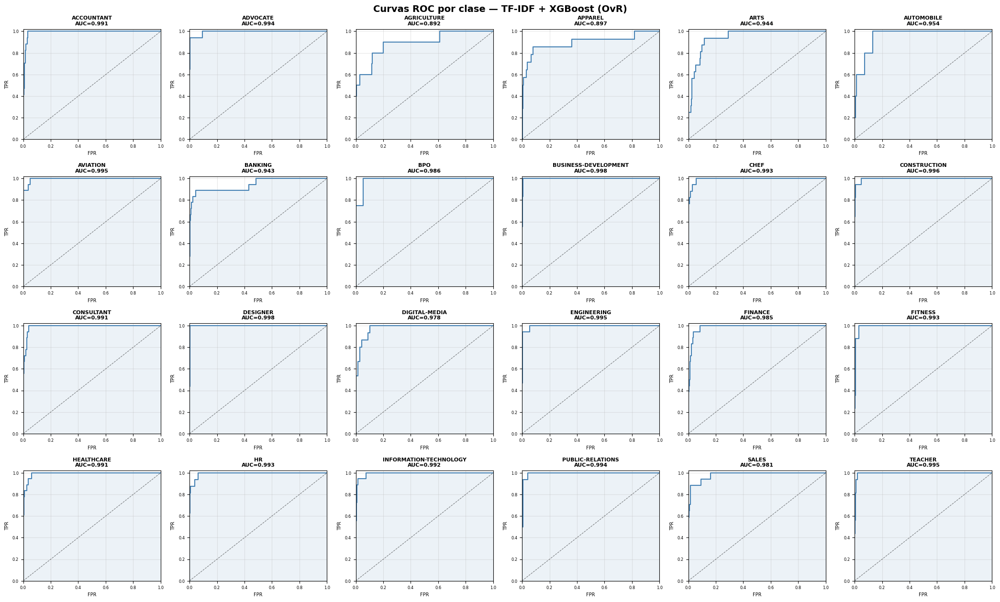
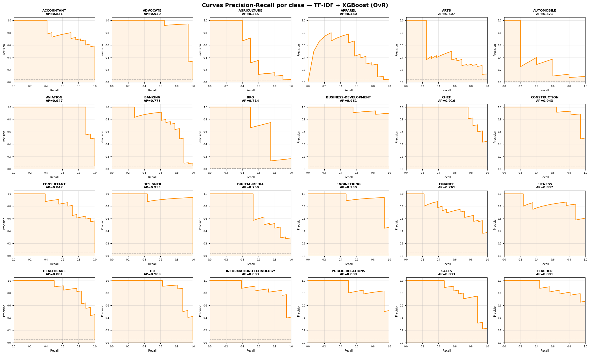
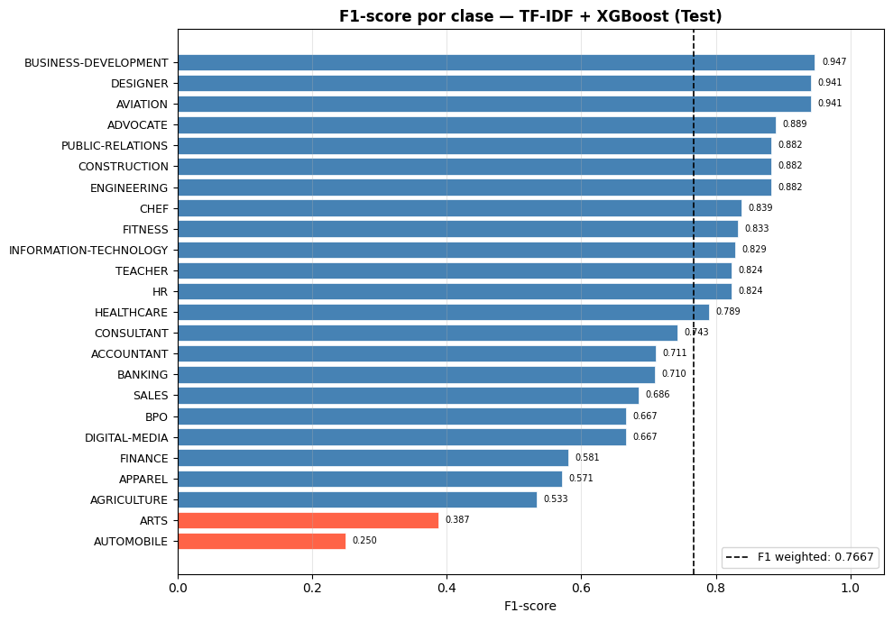
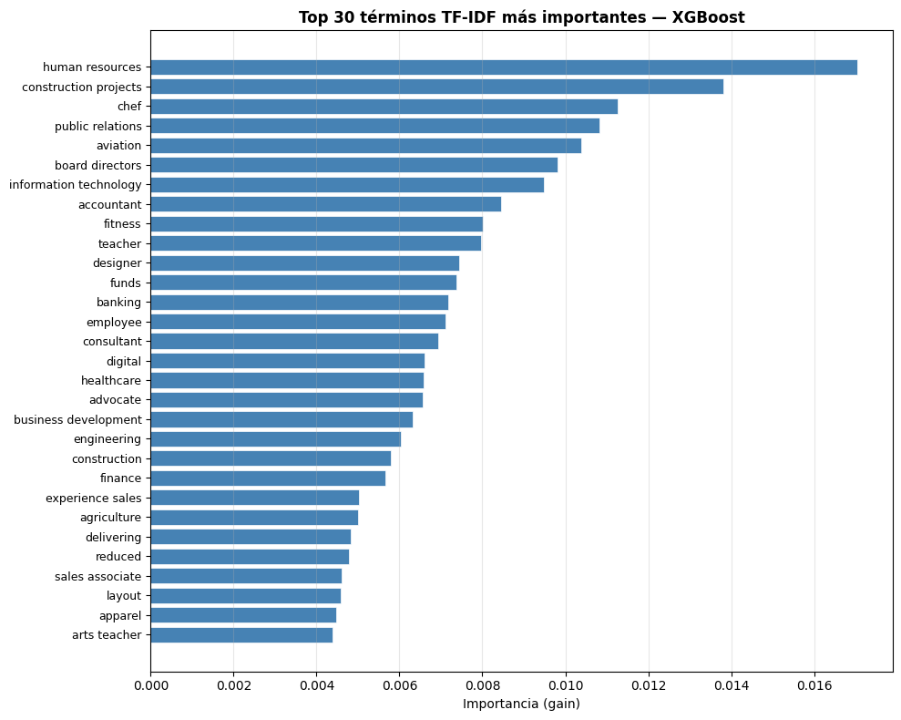

02 — Modelo Baseline: TF-IDF + XGBoost#
Proyecto: Segmentación de células e interpretación de texto mediante modelos de deep learning
Autor: Dr. Lihki Rubio
Notebook: 02 de 06 — Modelo clásico de referencia
Descripción#
Este notebook implementa el modelo baseline TF-IDF + XGBoost para clasificación de currículos en 24 categorías profesionales.
Pipeline:
Carga de
clean_textdesdedata/Resume.csv+ splits desdeartifacts/Vectorización TF-IDF sobre texto completo (sin truncado de secuencia)
Clasificación con XGBoost (acelerado por GPU/CUDA si disponible)
Evaluación completa: Accuracy, Precision, Recall, F1-weighted, ROC-AUC
Visualizaciones: Matriz de confusión, Curva ROC, Curva Precision-Recall
Persistencia de métricas en
artifacts/metrics/tfidf_xgboost.json
Nota: TF-IDF usa clean_text completo — no los arrays padded del EDA. XGBoost no requiere secuencias de longitud fija.
1. Imports y configuración#
import os
import json
import time
import pickle
import warnings
from datetime import datetime
import numpy as np
import pandas as pd
import matplotlib.pyplot as plt
import matplotlib.ticker as mticker
import seaborn as sns
from sklearn.feature_extraction.text import TfidfVectorizer
from sklearn.preprocessing import label_binarize
from sklearn.utils import compute_sample_weight
from sklearn.metrics import (
accuracy_score,
precision_score,
recall_score,
f1_score,
roc_auc_score,
confusion_matrix,
classification_report,
roc_curve,
precision_recall_curve,
auc,
)
import xgboost as xgb
warnings.filterwarnings('ignore')
np.random.seed(42)
print(f"XGBoost version : {xgb.__version__}")
print(f"Numpy version : {np.__version__}")
print(f"Pandas version : {pd.__version__}")
XGBoost version : 3.2.0
Numpy version : 2.2.5
Pandas version : 2.3.3
2. Rutas y directorios#
# ── Rutas base ────────────────────────────────────────────────────────────────
BASE_DIR = os.path.abspath(os.path.join(os.getcwd(), '..'))
DATA_DIR = os.path.join(BASE_DIR, 'data')
ARTIFACTS_DIR = os.path.join(BASE_DIR, 'artifacts')
MODELS_DIR = os.path.join(BASE_DIR, 'models')
METRICS_DIR = os.path.join(ARTIFACTS_DIR, 'metrics')
os.makedirs(MODELS_DIR, exist_ok=True)
os.makedirs(METRICS_DIR, exist_ok=True)
MODEL_NAME = 'tfidf_xgboost'
METRICS_PATH = os.path.join(METRICS_DIR, f'{MODEL_NAME}.json')
MODEL_PATH = os.path.join(MODELS_DIR, f'{MODEL_NAME}.json') # formato nativo XGBoost
TFIDF_PATH = os.path.join(MODELS_DIR, f'{MODEL_NAME}_tfidf.pkl')
print("Directorios:")
print(f" DATA : {DATA_DIR}")
print(f" ARTIFACTS : {ARTIFACTS_DIR}")
print(f" MODELS : {MODELS_DIR}")
print(f" METRICS : {METRICS_DIR}")
Directorios:
DATA : /home/alejo/DeepLearning/miniproyecto3/data
ARTIFACTS : /home/alejo/DeepLearning/miniproyecto3/artifacts
MODELS : /home/alejo/DeepLearning/miniproyecto3/models
METRICS : /home/alejo/DeepLearning/miniproyecto3/artifacts/metrics
3. Carga de datos y artefactos del EDA#
# ── CSV original (necesitamos clean_text y los índices del split) ─────────────
df = pd.read_csv(os.path.join(DATA_DIR, 'Resume.csv'))
print(f"Dataset cargado: {df.shape}")
print(df.columns.tolist())
Dataset cargado: (2484, 4)
['ID', 'Resume_str', 'Resume_html', 'Category']
# ── Artefactos del EDA ────────────────────────────────────────────────────────
with open(os.path.join(ARTIFACTS_DIR, 'label_encoder.pkl'), 'rb') as f:
le = pickle.load(f)
with open(os.path.join(ARTIFACTS_DIR, 'config.pkl'), 'rb') as f:
config = pickle.load(f)
# Etiquetas codificadas por split
y_train = np.load(os.path.join(ARTIFACTS_DIR, 'y_train.npy'))
y_val = np.load(os.path.join(ARTIFACTS_DIR, 'y_val.npy'))
y_test = np.load(os.path.join(ARTIFACTS_DIR, 'y_test.npy'))
NUM_CLASSES = config['NUM_CLASSES']
CLASS_NAMES = le.classes_
print(f"NUM_CLASSES : {NUM_CLASSES}")
print(f"Train size : {len(y_train)}")
print(f"Val size : {len(y_val)}")
print(f"Test size : {len(y_test)}")
print(f"Clases : {CLASS_NAMES}")
NUM_CLASSES : 24
Train size : 1738
Val size : 373
Test size : 373
Clases : ['ACCOUNTANT' 'ADVOCATE' 'AGRICULTURE' 'APPAREL' 'ARTS' 'AUTOMOBILE'
'AVIATION' 'BANKING' 'BPO' 'BUSINESS-DEVELOPMENT' 'CHEF' 'CONSTRUCTION'
'CONSULTANT' 'DESIGNER' 'DIGITAL-MEDIA' 'ENGINEERING' 'FINANCE' 'FITNESS'
'HEALTHCARE' 'HR' 'INFORMATION-TECHNOLOGY' 'PUBLIC-RELATIONS' 'SALES'
'TEACHER']
# Reproduce el split exacto del EDA usando la misma semilla.
from sklearn.model_selection import train_test_split
from sklearn.preprocessing import LabelEncoder
import re, nltk
nltk.download('stopwords', quiet=True)
from nltk.corpus import stopwords
STOPWORDS = set(stopwords.words('english'))
def clean_text(text):
text = str(text).lower()
text = re.sub(r'http\S+|www\.\S+|\S+@\S+', ' ', text)
text = re.sub(r'[^a-z\s]', ' ', text)
text = re.sub(r'\s+', ' ', text).strip()
tokens = [w for w in text.split() if w not in STOPWORDS and len(w) >= 3]
return ' '.join(tokens)
if 'clean_text' not in df.columns:
df['clean_text'] = df['Resume_str'].apply(clean_text)
le_alt = LabelEncoder()
y_encoded = le_alt.fit_transform(df['Category'])
idx_all = np.arange(len(df))
idx_train, idx_temp, _, y_temp = train_test_split(
idx_all, y_encoded, test_size=0.30, stratify=y_encoded, random_state=42)
idx_val, idx_test, _, _ = train_test_split(
idx_temp, y_temp, test_size=0.50, stratify=y_temp, random_state=42)
text_train = df['clean_text'].iloc[idx_train].values
text_val = df['clean_text'].iloc[idx_val].values
text_test = df['clean_text'].iloc[idx_test].values
y_train = y_encoded[idx_train]
y_val = y_encoded[idx_val]
y_test = y_encoded[idx_test]
print("Split reproducido correctamente.")
Split reproducido correctamente.
4. Vectorización TF-IDF#
El vectorizador se fittea solo sobre train para evitar data leakage — mismo principio aplicado al Tokenizer en el EDA.
# ── Hiperparámetros TF-IDF ────────────────────────────────────────────────────
TFIDF_PARAMS = dict(
max_features = 50_000, # vocabulario amplio — texto largo de CVs
ngram_range = (1, 2), # unigramas + bigramas
sublinear_tf = True, # log(1+tf) — reduce dominancia de términos muy frecuentes
min_df = 2, # ignorar términos que aparecen en menos de 2 docs
max_df = 0.95, # ignorar términos en más del 95% de docs (stop-like)
analyzer = 'word',
strip_accents = 'unicode',
dtype = np.float32,
)
print("Parámetros TF-IDF:")
for k, v in TFIDF_PARAMS.items():
print(f" {k:<15}: {v}")
Parámetros TF-IDF:
max_features : 50000
ngram_range : (1, 2)
sublinear_tf : True
min_df : 2
max_df : 0.95
analyzer : word
strip_accents : unicode
dtype : <class 'numpy.float32'>
# ── Fit solo sobre train ──────────────────────────────────────────────────────
print("Fiteando TF-IDF sobre train...")
t0 = time.time()
tfidf = TfidfVectorizer(**TFIDF_PARAMS)
X_train_tfidf = tfidf.fit_transform(text_train) # fit + transform
X_val_tfidf = tfidf.transform(text_val) # solo transform
X_test_tfidf = tfidf.transform(text_test) # solo transform
tfidf_time = time.time() - t0
print(f"\nVocabulario efectivo : {len(tfidf.vocabulary_):,} términos")
print(f"Shape train : {X_train_tfidf.shape}")
print(f"Shape val : {X_val_tfidf.shape}")
print(f"Shape test : {X_test_tfidf.shape}")
print(f"Tiempo TF-IDF : {tfidf_time:.2f}s")
print(f"Sparsity train : {1 - X_train_tfidf.nnz / (X_train_tfidf.shape[0]*X_train_tfidf.shape[1]):.4f}")
Fiteando TF-IDF sobre train...
Vocabulario efectivo : 50,000 términos
Shape train : (1738, 50000)
Shape val : (373, 50000)
Shape test : (373, 50000)
Tiempo TF-IDF : 5.46s
Sparsity train : 0.9905
5. Manejo del desbalance de clases#
El dataset tiene un desbalance de 5.45x (120 muestras en IT/Business-Dev vs 22 en BPO). Usamos sample_weight para compensar — XGBoost lo aplica por muestra durante el entrenamiento.
# Desbalance 5.45x — XGBoost es robusto sin sample_weight a este nivel
# Ver BUG-04 en knowledge base: sample_weight desestabiliza el entrenamiento
print("Distribución de clases en train:")
classes, counts = np.unique(y_train, return_counts=True)
for c, n in zip(le.classes_, counts):
print(f" {c:<25}: {n}")
print(f"\nRatio max/min: {counts.max()/counts.min():.2f}x")
Distribución de clases en train:
ACCOUNTANT : 83
ADVOCATE : 83
AGRICULTURE : 44
APPAREL : 68
ARTS : 72
AUTOMOBILE : 25
AVIATION : 82
BANKING : 80
BPO : 15
BUSINESS-DEVELOPMENT : 84
CHEF : 83
CONSTRUCTION : 78
CONSULTANT : 80
DESIGNER : 75
DIGITAL-MEDIA : 67
ENGINEERING : 83
FINANCE : 83
FITNESS : 82
HEALTHCARE : 80
HR : 77
INFORMATION-TECHNOLOGY : 84
PUBLIC-RELATIONS : 78
SALES : 81
TEACHER : 71
Ratio max/min: 5.60x
6. Entrenamiento XGBoost#
XGBoost con aceleración GPU (device='cuda'). Si CUDA no está disponible, cambia a device='cpu' automáticamente.
try:
probe = xgb.XGBClassifier(device='cuda', n_estimators=1, num_class=NUM_CLASSES)
# Usar datos sintéticos con todas las clases garantizadas
X_probe = np.random.rand(NUM_CLASSES, 10).astype(np.float32)
y_probe = np.arange(NUM_CLASSES)
probe.fit(X_probe, y_probe)
DEVICE = 'cuda'
print("GPU (CUDA) disponible — usando aceleración GPU")
except Exception as e:
DEVICE = 'cpu'
print(f"GPU no disponible ({e}) — usando CPU")
print(f"Device seleccionado: {DEVICE}")
GPU (CUDA) disponible — usando aceleración GPU
Device seleccionado: cuda
# ── Hiperparámetros XGBoost ───────────────────────────────────────────────────
XGB_PARAMS = dict(
n_estimators = 500,
max_depth = 6,
learning_rate = 0.1,
subsample = 1.0, # ← simplificado
colsample_bytree = 1.0, # ← simplificado
min_child_weight = 1, # ← simplificado
gamma = 0.0, # ← simplificado (default)
reg_alpha = 1.0, # ← simplificado (default)
reg_lambda = 5.0, # default de XGBoost
objective = 'multi:softprob',
num_class = NUM_CLASSES,
eval_metric = ['mlogloss', 'merror'],
early_stopping_rounds = 50,
device = DEVICE,
random_state = 42,
n_jobs = -1,
verbosity = 1,
)
print("Hiperparámetros XGBoost:")
for k, v in XGB_PARAMS.items():
print(f" {k:<25}: {v}")
Hiperparámetros XGBoost:
n_estimators : 500
max_depth : 6
learning_rate : 0.1
subsample : 1.0
colsample_bytree : 1.0
min_child_weight : 1
gamma : 0.0
reg_alpha : 1.0
reg_lambda : 5.0
objective : multi:softprob
num_class : 24
eval_metric : ['mlogloss', 'merror']
early_stopping_rounds : 50
device : cuda
random_state : 42
n_jobs : -1
verbosity : 1
# ── Entrenamiento ─────────────────────────────────────────────────────────────
print("Entrenando XGBoost...")
print(f" Train shape: {X_train_tfidf.shape}")
print(f" Val shape : {X_val_tfidf.shape}")
print()
t_start = time.time()
model = xgb.XGBClassifier(**XGB_PARAMS)
model.fit(
X_train_tfidf, y_train,
eval_set = [(X_train_tfidf, y_train), (X_val_tfidf, y_val)],
verbose = 1, # print cada 50 rounds
)
training_time = time.time() - t_start
best_round = model.best_iteration
print(f"\nEntrenamiento completado en {training_time:.1f}s")
print(f"Mejor iteración (early stopping): {best_round}")
Entrenando XGBoost...
Train shape: (1738, 50000)
Val shape : (373, 50000)
[0] validation_0-mlogloss:2.74425 validation_0-merror:0.23418 validation_1-mlogloss:2.81843 validation_1-merror:0.38606
[1] validation_0-mlogloss:2.43645 validation_0-merror:0.16801 validation_1-mlogloss:2.57116 validation_1-merror:0.33780
[2] validation_0-mlogloss:2.18953 validation_0-merror:0.14212 validation_1-mlogloss:2.40186 validation_1-merror:0.31903
[3] validation_0-mlogloss:1.98591 validation_0-merror:0.12658 validation_1-mlogloss:2.25171 validation_1-merror:0.30295
[4] validation_0-mlogloss:1.81514 validation_0-merror:0.11220 validation_1-mlogloss:2.12426 validation_1-merror:0.30295
[5] validation_0-mlogloss:1.66868 validation_0-merror:0.10644 validation_1-mlogloss:2.01229 validation_1-merror:0.29223
[6] validation_0-mlogloss:1.54038 validation_0-merror:0.09781 validation_1-mlogloss:1.91779 validation_1-merror:0.29491
[7] validation_0-mlogloss:1.42755 validation_0-merror:0.08516 validation_1-mlogloss:1.83316 validation_1-merror:0.29223
[8] validation_0-mlogloss:1.32637 validation_0-merror:0.08228 validation_1-mlogloss:1.75926 validation_1-merror:0.28150
[9] validation_0-mlogloss:1.23583 validation_0-merror:0.07595 validation_1-mlogloss:1.69126 validation_1-merror:0.27882
[10] validation_0-mlogloss:1.15395 validation_0-merror:0.07135 validation_1-mlogloss:1.63423 validation_1-merror:0.28150
[11] validation_0-mlogloss:1.07944 validation_0-merror:0.06904 validation_1-mlogloss:1.58221 validation_1-merror:0.28954
[12] validation_0-mlogloss:1.01253 validation_0-merror:0.06789 validation_1-mlogloss:1.53345 validation_1-merror:0.28954
[13] validation_0-mlogloss:0.95036 validation_0-merror:0.06329 validation_1-mlogloss:1.48642 validation_1-merror:0.28686
[14] validation_0-mlogloss:0.89413 validation_0-merror:0.06041 validation_1-mlogloss:1.44539 validation_1-merror:0.28954
[15] validation_0-mlogloss:0.84173 validation_0-merror:0.05811 validation_1-mlogloss:1.41020 validation_1-merror:0.28150
[16] validation_0-mlogloss:0.79412 validation_0-merror:0.05236 validation_1-mlogloss:1.37626 validation_1-merror:0.28150
[17] validation_0-mlogloss:0.74923 validation_0-merror:0.04891 validation_1-mlogloss:1.34484 validation_1-merror:0.27882
[18] validation_0-mlogloss:0.70813 validation_0-merror:0.04545 validation_1-mlogloss:1.31484 validation_1-merror:0.27614
[19] validation_0-mlogloss:0.66967 validation_0-merror:0.04258 validation_1-mlogloss:1.28712 validation_1-merror:0.27078
[20] validation_0-mlogloss:0.63413 validation_0-merror:0.04200 validation_1-mlogloss:1.26082 validation_1-merror:0.27346
[21] validation_0-mlogloss:0.60128 validation_0-merror:0.03970 validation_1-mlogloss:1.23771 validation_1-merror:0.26273
[22] validation_0-mlogloss:0.57058 validation_0-merror:0.03855 validation_1-mlogloss:1.21608 validation_1-merror:0.26542
[23] validation_0-mlogloss:0.54201 validation_0-merror:0.03567 validation_1-mlogloss:1.19455 validation_1-merror:0.26273
[24] validation_0-mlogloss:0.51540 validation_0-merror:0.03452 validation_1-mlogloss:1.17579 validation_1-merror:0.26273
[25] validation_0-mlogloss:0.49060 validation_0-merror:0.03049 validation_1-mlogloss:1.15748 validation_1-merror:0.25737
[26] validation_0-mlogloss:0.46705 validation_0-merror:0.02762 validation_1-mlogloss:1.14124 validation_1-merror:0.25469
[27] validation_0-mlogloss:0.44543 validation_0-merror:0.02359 validation_1-mlogloss:1.12716 validation_1-merror:0.24933
[28] validation_0-mlogloss:0.42490 validation_0-merror:0.02301 validation_1-mlogloss:1.11441 validation_1-merror:0.25469
[29] validation_0-mlogloss:0.40583 validation_0-merror:0.02129 validation_1-mlogloss:1.10079 validation_1-merror:0.25737
[30] validation_0-mlogloss:0.38779 validation_0-merror:0.01784 validation_1-mlogloss:1.08945 validation_1-merror:0.25469
[31] validation_0-mlogloss:0.37099 validation_0-merror:0.01726 validation_1-mlogloss:1.07827 validation_1-merror:0.25469
[32] validation_0-mlogloss:0.35505 validation_0-merror:0.01554 validation_1-mlogloss:1.06862 validation_1-merror:0.25201
[33] validation_0-mlogloss:0.34012 validation_0-merror:0.01438 validation_1-mlogloss:1.05866 validation_1-merror:0.25469
[34] validation_0-mlogloss:0.32593 validation_0-merror:0.01266 validation_1-mlogloss:1.04762 validation_1-merror:0.25469
[35] validation_0-mlogloss:0.31288 validation_0-merror:0.01208 validation_1-mlogloss:1.04036 validation_1-merror:0.25737
[36] validation_0-mlogloss:0.30060 validation_0-merror:0.00978 validation_1-mlogloss:1.03219 validation_1-merror:0.26273
[37] validation_0-mlogloss:0.28885 validation_0-merror:0.00921 validation_1-mlogloss:1.02410 validation_1-merror:0.26005
[38] validation_0-mlogloss:0.27787 validation_0-merror:0.00748 validation_1-mlogloss:1.01692 validation_1-merror:0.26005
[39] validation_0-mlogloss:0.26724 validation_0-merror:0.00633 validation_1-mlogloss:1.00983 validation_1-merror:0.25737
[40] validation_0-mlogloss:0.25759 validation_0-merror:0.00575 validation_1-mlogloss:1.00442 validation_1-merror:0.26005
[41] validation_0-mlogloss:0.24838 validation_0-merror:0.00518 validation_1-mlogloss:0.99879 validation_1-merror:0.25737
[42] validation_0-mlogloss:0.23965 validation_0-merror:0.00518 validation_1-mlogloss:0.99222 validation_1-merror:0.25737
[43] validation_0-mlogloss:0.23128 validation_0-merror:0.00403 validation_1-mlogloss:0.98711 validation_1-merror:0.25469
[44] validation_0-mlogloss:0.22353 validation_0-merror:0.00403 validation_1-mlogloss:0.98218 validation_1-merror:0.25737
[45] validation_0-mlogloss:0.21612 validation_0-merror:0.00345 validation_1-mlogloss:0.97705 validation_1-merror:0.25469
[46] validation_0-mlogloss:0.20905 validation_0-merror:0.00345 validation_1-mlogloss:0.97094 validation_1-merror:0.25469
[47] validation_0-mlogloss:0.20234 validation_0-merror:0.00230 validation_1-mlogloss:0.96591 validation_1-merror:0.25737
[48] validation_0-mlogloss:0.19607 validation_0-merror:0.00230 validation_1-mlogloss:0.96166 validation_1-merror:0.25737
[49] validation_0-mlogloss:0.19006 validation_0-merror:0.00173 validation_1-mlogloss:0.95750 validation_1-merror:0.25201
[50] validation_0-mlogloss:0.18430 validation_0-merror:0.00173 validation_1-mlogloss:0.95351 validation_1-merror:0.25201
[51] validation_0-mlogloss:0.17887 validation_0-merror:0.00173 validation_1-mlogloss:0.94967 validation_1-merror:0.24933
[52] validation_0-mlogloss:0.17380 validation_0-merror:0.00173 validation_1-mlogloss:0.94644 validation_1-merror:0.24397
[53] validation_0-mlogloss:0.16895 validation_0-merror:0.00115 validation_1-mlogloss:0.94340 validation_1-merror:0.24397
[54] validation_0-mlogloss:0.16432 validation_0-merror:0.00058 validation_1-mlogloss:0.94083 validation_1-merror:0.24397
[55] validation_0-mlogloss:0.15980 validation_0-merror:0.00058 validation_1-mlogloss:0.93741 validation_1-merror:0.24397
[56] validation_0-mlogloss:0.15567 validation_0-merror:0.00000 validation_1-mlogloss:0.93528 validation_1-merror:0.24665
[57] validation_0-mlogloss:0.15163 validation_0-merror:0.00000 validation_1-mlogloss:0.93284 validation_1-merror:0.24665
[58] validation_0-mlogloss:0.14775 validation_0-merror:0.00000 validation_1-mlogloss:0.93019 validation_1-merror:0.24665
[59] validation_0-mlogloss:0.14402 validation_0-merror:0.00000 validation_1-mlogloss:0.92688 validation_1-merror:0.24665
[60] validation_0-mlogloss:0.14052 validation_0-merror:0.00000 validation_1-mlogloss:0.92414 validation_1-merror:0.24665
[61] validation_0-mlogloss:0.13720 validation_0-merror:0.00000 validation_1-mlogloss:0.92245 validation_1-merror:0.24665
[62] validation_0-mlogloss:0.13395 validation_0-merror:0.00000 validation_1-mlogloss:0.92084 validation_1-merror:0.24397
[63] validation_0-mlogloss:0.13078 validation_0-merror:0.00000 validation_1-mlogloss:0.91840 validation_1-merror:0.24129
[64] validation_0-mlogloss:0.12791 validation_0-merror:0.00000 validation_1-mlogloss:0.91652 validation_1-merror:0.23861
[65] validation_0-mlogloss:0.12499 validation_0-merror:0.00000 validation_1-mlogloss:0.91467 validation_1-merror:0.24129
[66] validation_0-mlogloss:0.12235 validation_0-merror:0.00000 validation_1-mlogloss:0.91307 validation_1-merror:0.24397
[67] validation_0-mlogloss:0.11979 validation_0-merror:0.00000 validation_1-mlogloss:0.91067 validation_1-merror:0.23861
[68] validation_0-mlogloss:0.11732 validation_0-merror:0.00000 validation_1-mlogloss:0.90908 validation_1-merror:0.23861
[69] validation_0-mlogloss:0.11495 validation_0-merror:0.00000 validation_1-mlogloss:0.90794 validation_1-merror:0.23861
[70] validation_0-mlogloss:0.11264 validation_0-merror:0.00000 validation_1-mlogloss:0.90574 validation_1-merror:0.23861
[71] validation_0-mlogloss:0.11044 validation_0-merror:0.00000 validation_1-mlogloss:0.90430 validation_1-merror:0.23861
[72] validation_0-mlogloss:0.10829 validation_0-merror:0.00000 validation_1-mlogloss:0.90314 validation_1-merror:0.23861
[73] validation_0-mlogloss:0.10632 validation_0-merror:0.00000 validation_1-mlogloss:0.90255 validation_1-merror:0.23861
[74] validation_0-mlogloss:0.10439 validation_0-merror:0.00000 validation_1-mlogloss:0.90061 validation_1-merror:0.23861
[75] validation_0-mlogloss:0.10249 validation_0-merror:0.00000 validation_1-mlogloss:0.89954 validation_1-merror:0.23861
[76] validation_0-mlogloss:0.10073 validation_0-merror:0.00000 validation_1-mlogloss:0.89834 validation_1-merror:0.23861
[77] validation_0-mlogloss:0.09904 validation_0-merror:0.00000 validation_1-mlogloss:0.89742 validation_1-merror:0.23592
[78] validation_0-mlogloss:0.09737 validation_0-merror:0.00000 validation_1-mlogloss:0.89647 validation_1-merror:0.23592
[79] validation_0-mlogloss:0.09579 validation_0-merror:0.00000 validation_1-mlogloss:0.89548 validation_1-merror:0.23592
[80] validation_0-mlogloss:0.09428 validation_0-merror:0.00000 validation_1-mlogloss:0.89443 validation_1-merror:0.23592
[81] validation_0-mlogloss:0.09274 validation_0-merror:0.00000 validation_1-mlogloss:0.89351 validation_1-merror:0.23324
[82] validation_0-mlogloss:0.09130 validation_0-merror:0.00000 validation_1-mlogloss:0.89179 validation_1-merror:0.23324
[83] validation_0-mlogloss:0.08984 validation_0-merror:0.00000 validation_1-mlogloss:0.89152 validation_1-merror:0.23324
[84] validation_0-mlogloss:0.08851 validation_0-merror:0.00000 validation_1-mlogloss:0.89085 validation_1-merror:0.23324
[85] validation_0-mlogloss:0.08716 validation_0-merror:0.00000 validation_1-mlogloss:0.88994 validation_1-merror:0.23324
[86] validation_0-mlogloss:0.08587 validation_0-merror:0.00000 validation_1-mlogloss:0.88867 validation_1-merror:0.23324
[87] validation_0-mlogloss:0.08471 validation_0-merror:0.00000 validation_1-mlogloss:0.88768 validation_1-merror:0.23324
[88] validation_0-mlogloss:0.08354 validation_0-merror:0.00000 validation_1-mlogloss:0.88669 validation_1-merror:0.23324
[89] validation_0-mlogloss:0.08239 validation_0-merror:0.00000 validation_1-mlogloss:0.88626 validation_1-merror:0.23324
[90] validation_0-mlogloss:0.08130 validation_0-merror:0.00000 validation_1-mlogloss:0.88562 validation_1-merror:0.23324
[91] validation_0-mlogloss:0.08021 validation_0-merror:0.00000 validation_1-mlogloss:0.88501 validation_1-merror:0.22788
[92] validation_0-mlogloss:0.07918 validation_0-merror:0.00000 validation_1-mlogloss:0.88417 validation_1-merror:0.22788
[93] validation_0-mlogloss:0.07818 validation_0-merror:0.00000 validation_1-mlogloss:0.88352 validation_1-merror:0.22788
[94] validation_0-mlogloss:0.07720 validation_0-merror:0.00000 validation_1-mlogloss:0.88324 validation_1-merror:0.22788
[95] validation_0-mlogloss:0.07626 validation_0-merror:0.00000 validation_1-mlogloss:0.88266 validation_1-merror:0.22788
[96] validation_0-mlogloss:0.07533 validation_0-merror:0.00000 validation_1-mlogloss:0.88203 validation_1-merror:0.22788
[97] validation_0-mlogloss:0.07440 validation_0-merror:0.00000 validation_1-mlogloss:0.88137 validation_1-merror:0.22788
[98] validation_0-mlogloss:0.07356 validation_0-merror:0.00000 validation_1-mlogloss:0.88105 validation_1-merror:0.22788
[99] validation_0-mlogloss:0.07271 validation_0-merror:0.00000 validation_1-mlogloss:0.88036 validation_1-merror:0.22788
[100] validation_0-mlogloss:0.07192 validation_0-merror:0.00000 validation_1-mlogloss:0.88000 validation_1-merror:0.22788
[101] validation_0-mlogloss:0.07115 validation_0-merror:0.00000 validation_1-mlogloss:0.87939 validation_1-merror:0.22788
[102] validation_0-mlogloss:0.07037 validation_0-merror:0.00000 validation_1-mlogloss:0.87862 validation_1-merror:0.22788
[103] validation_0-mlogloss:0.06962 validation_0-merror:0.00000 validation_1-mlogloss:0.87806 validation_1-merror:0.22788
[104] validation_0-mlogloss:0.06890 validation_0-merror:0.00000 validation_1-mlogloss:0.87757 validation_1-merror:0.22788
[105] validation_0-mlogloss:0.06819 validation_0-merror:0.00000 validation_1-mlogloss:0.87682 validation_1-merror:0.22788
[106] validation_0-mlogloss:0.06748 validation_0-merror:0.00000 validation_1-mlogloss:0.87591 validation_1-merror:0.22788
[107] validation_0-mlogloss:0.06676 validation_0-merror:0.00000 validation_1-mlogloss:0.87515 validation_1-merror:0.22788
[108] validation_0-mlogloss:0.06612 validation_0-merror:0.00000 validation_1-mlogloss:0.87521 validation_1-merror:0.22788
[109] validation_0-mlogloss:0.06545 validation_0-merror:0.00000 validation_1-mlogloss:0.87415 validation_1-merror:0.22788
[110] validation_0-mlogloss:0.06482 validation_0-merror:0.00000 validation_1-mlogloss:0.87387 validation_1-merror:0.22788
[111] validation_0-mlogloss:0.06422 validation_0-merror:0.00000 validation_1-mlogloss:0.87340 validation_1-merror:0.22788
[112] validation_0-mlogloss:0.06365 validation_0-merror:0.00000 validation_1-mlogloss:0.87306 validation_1-merror:0.22788
[113] validation_0-mlogloss:0.06306 validation_0-merror:0.00000 validation_1-mlogloss:0.87184 validation_1-merror:0.22788
[114] validation_0-mlogloss:0.06247 validation_0-merror:0.00000 validation_1-mlogloss:0.87169 validation_1-merror:0.22788
[115] validation_0-mlogloss:0.06194 validation_0-merror:0.00000 validation_1-mlogloss:0.87132 validation_1-merror:0.22788
[116] validation_0-mlogloss:0.06141 validation_0-merror:0.00000 validation_1-mlogloss:0.87072 validation_1-merror:0.22788
[117] validation_0-mlogloss:0.06091 validation_0-merror:0.00000 validation_1-mlogloss:0.87054 validation_1-merror:0.22788
[118] validation_0-mlogloss:0.06034 validation_0-merror:0.00000 validation_1-mlogloss:0.87011 validation_1-merror:0.22788
[119] validation_0-mlogloss:0.05983 validation_0-merror:0.00000 validation_1-mlogloss:0.86929 validation_1-merror:0.22520
[120] validation_0-mlogloss:0.05935 validation_0-merror:0.00000 validation_1-mlogloss:0.86941 validation_1-merror:0.22788
[121] validation_0-mlogloss:0.05887 validation_0-merror:0.00000 validation_1-mlogloss:0.86870 validation_1-merror:0.22520
[122] validation_0-mlogloss:0.05843 validation_0-merror:0.00000 validation_1-mlogloss:0.86877 validation_1-merror:0.22520
[123] validation_0-mlogloss:0.05793 validation_0-merror:0.00000 validation_1-mlogloss:0.86850 validation_1-merror:0.22520
[124] validation_0-mlogloss:0.05750 validation_0-merror:0.00000 validation_1-mlogloss:0.86782 validation_1-merror:0.22520
[125] validation_0-mlogloss:0.05711 validation_0-merror:0.00000 validation_1-mlogloss:0.86760 validation_1-merror:0.22520
[126] validation_0-mlogloss:0.05671 validation_0-merror:0.00000 validation_1-mlogloss:0.86754 validation_1-merror:0.22520
[127] validation_0-mlogloss:0.05629 validation_0-merror:0.00000 validation_1-mlogloss:0.86706 validation_1-merror:0.22520
[128] validation_0-mlogloss:0.05590 validation_0-merror:0.00000 validation_1-mlogloss:0.86681 validation_1-merror:0.22520
[129] validation_0-mlogloss:0.05555 validation_0-merror:0.00000 validation_1-mlogloss:0.86656 validation_1-merror:0.22520
[130] validation_0-mlogloss:0.05520 validation_0-merror:0.00000 validation_1-mlogloss:0.86650 validation_1-merror:0.22520
[131] validation_0-mlogloss:0.05486 validation_0-merror:0.00000 validation_1-mlogloss:0.86607 validation_1-merror:0.22520
[132] validation_0-mlogloss:0.05456 validation_0-merror:0.00000 validation_1-mlogloss:0.86566 validation_1-merror:0.22520
[133] validation_0-mlogloss:0.05426 validation_0-merror:0.00000 validation_1-mlogloss:0.86585 validation_1-merror:0.22520
[134] validation_0-mlogloss:0.05396 validation_0-merror:0.00000 validation_1-mlogloss:0.86508 validation_1-merror:0.22520
[135] validation_0-mlogloss:0.05367 validation_0-merror:0.00000 validation_1-mlogloss:0.86512 validation_1-merror:0.22520
[136] validation_0-mlogloss:0.05337 validation_0-merror:0.00000 validation_1-mlogloss:0.86476 validation_1-merror:0.22520
[137] validation_0-mlogloss:0.05312 validation_0-merror:0.00000 validation_1-mlogloss:0.86469 validation_1-merror:0.22520
[138] validation_0-mlogloss:0.05288 validation_0-merror:0.00000 validation_1-mlogloss:0.86478 validation_1-merror:0.22520
[139] validation_0-mlogloss:0.05267 validation_0-merror:0.00000 validation_1-mlogloss:0.86443 validation_1-merror:0.22252
[140] validation_0-mlogloss:0.05248 validation_0-merror:0.00000 validation_1-mlogloss:0.86440 validation_1-merror:0.22252
[141] validation_0-mlogloss:0.05230 validation_0-merror:0.00000 validation_1-mlogloss:0.86413 validation_1-merror:0.22252
[142] validation_0-mlogloss:0.05209 validation_0-merror:0.00000 validation_1-mlogloss:0.86410 validation_1-merror:0.22252
[143] validation_0-mlogloss:0.05190 validation_0-merror:0.00000 validation_1-mlogloss:0.86360 validation_1-merror:0.22252
[144] validation_0-mlogloss:0.05173 validation_0-merror:0.00000 validation_1-mlogloss:0.86352 validation_1-merror:0.21984
[145] validation_0-mlogloss:0.05157 validation_0-merror:0.00000 validation_1-mlogloss:0.86317 validation_1-merror:0.21984
[146] validation_0-mlogloss:0.05139 validation_0-merror:0.00000 validation_1-mlogloss:0.86304 validation_1-merror:0.21984
[147] validation_0-mlogloss:0.05124 validation_0-merror:0.00000 validation_1-mlogloss:0.86283 validation_1-merror:0.21984
[148] validation_0-mlogloss:0.05108 validation_0-merror:0.00000 validation_1-mlogloss:0.86283 validation_1-merror:0.21984
[149] validation_0-mlogloss:0.05092 validation_0-merror:0.00000 validation_1-mlogloss:0.86260 validation_1-merror:0.21984
[150] validation_0-mlogloss:0.05080 validation_0-merror:0.00000 validation_1-mlogloss:0.86260 validation_1-merror:0.21984
[151] validation_0-mlogloss:0.05070 validation_0-merror:0.00000 validation_1-mlogloss:0.86230 validation_1-merror:0.21984
[152] validation_0-mlogloss:0.05056 validation_0-merror:0.00000 validation_1-mlogloss:0.86227 validation_1-merror:0.21984
[153] validation_0-mlogloss:0.05047 validation_0-merror:0.00000 validation_1-mlogloss:0.86212 validation_1-merror:0.21984
[154] validation_0-mlogloss:0.05035 validation_0-merror:0.00000 validation_1-mlogloss:0.86198 validation_1-merror:0.21984
[155] validation_0-mlogloss:0.05024 validation_0-merror:0.00000 validation_1-mlogloss:0.86207 validation_1-merror:0.21984
[156] validation_0-mlogloss:0.05014 validation_0-merror:0.00000 validation_1-mlogloss:0.86185 validation_1-merror:0.21984
[157] validation_0-mlogloss:0.05006 validation_0-merror:0.00000 validation_1-mlogloss:0.86186 validation_1-merror:0.21984
[158] validation_0-mlogloss:0.04997 validation_0-merror:0.00000 validation_1-mlogloss:0.86160 validation_1-merror:0.21984
[159] validation_0-mlogloss:0.04987 validation_0-merror:0.00000 validation_1-mlogloss:0.86163 validation_1-merror:0.21984
[160] validation_0-mlogloss:0.04979 validation_0-merror:0.00000 validation_1-mlogloss:0.86176 validation_1-merror:0.21984
[161] validation_0-mlogloss:0.04971 validation_0-merror:0.00000 validation_1-mlogloss:0.86155 validation_1-merror:0.21984
[162] validation_0-mlogloss:0.04964 validation_0-merror:0.00000 validation_1-mlogloss:0.86147 validation_1-merror:0.21984
[163] validation_0-mlogloss:0.04957 validation_0-merror:0.00000 validation_1-mlogloss:0.86141 validation_1-merror:0.21984
[164] validation_0-mlogloss:0.04951 validation_0-merror:0.00000 validation_1-mlogloss:0.86159 validation_1-merror:0.21984
[165] validation_0-mlogloss:0.04944 validation_0-merror:0.00000 validation_1-mlogloss:0.86144 validation_1-merror:0.21984
[166] validation_0-mlogloss:0.04938 validation_0-merror:0.00000 validation_1-mlogloss:0.86161 validation_1-merror:0.21984
[167] validation_0-mlogloss:0.04933 validation_0-merror:0.00000 validation_1-mlogloss:0.86147 validation_1-merror:0.21984
[168] validation_0-mlogloss:0.04926 validation_0-merror:0.00000 validation_1-mlogloss:0.86154 validation_1-merror:0.21984
[169] validation_0-mlogloss:0.04919 validation_0-merror:0.00000 validation_1-mlogloss:0.86142 validation_1-merror:0.21984
[170] validation_0-mlogloss:0.04913 validation_0-merror:0.00000 validation_1-mlogloss:0.86136 validation_1-merror:0.21984
[171] validation_0-mlogloss:0.04907 validation_0-merror:0.00000 validation_1-mlogloss:0.86136 validation_1-merror:0.21984
[172] validation_0-mlogloss:0.04902 validation_0-merror:0.00000 validation_1-mlogloss:0.86139 validation_1-merror:0.21984
[173] validation_0-mlogloss:0.04898 validation_0-merror:0.00000 validation_1-mlogloss:0.86132 validation_1-merror:0.21984
[174] validation_0-mlogloss:0.04894 validation_0-merror:0.00000 validation_1-mlogloss:0.86134 validation_1-merror:0.21984
[175] validation_0-mlogloss:0.04889 validation_0-merror:0.00000 validation_1-mlogloss:0.86136 validation_1-merror:0.21984
[176] validation_0-mlogloss:0.04886 validation_0-merror:0.00000 validation_1-mlogloss:0.86145 validation_1-merror:0.21984
[177] validation_0-mlogloss:0.04884 validation_0-merror:0.00000 validation_1-mlogloss:0.86146 validation_1-merror:0.21984
[178] validation_0-mlogloss:0.04882 validation_0-merror:0.00000 validation_1-mlogloss:0.86141 validation_1-merror:0.21984
[179] validation_0-mlogloss:0.04881 validation_0-merror:0.00000 validation_1-mlogloss:0.86141 validation_1-merror:0.21984
[180] validation_0-mlogloss:0.04879 validation_0-merror:0.00000 validation_1-mlogloss:0.86140 validation_1-merror:0.21984
[181] validation_0-mlogloss:0.04877 validation_0-merror:0.00000 validation_1-mlogloss:0.86139 validation_1-merror:0.21984
[182] validation_0-mlogloss:0.04875 validation_0-merror:0.00000 validation_1-mlogloss:0.86143 validation_1-merror:0.21984
[183] validation_0-mlogloss:0.04872 validation_0-merror:0.00000 validation_1-mlogloss:0.86146 validation_1-merror:0.21984
[184] validation_0-mlogloss:0.04871 validation_0-merror:0.00000 validation_1-mlogloss:0.86145 validation_1-merror:0.21984
[185] validation_0-mlogloss:0.04869 validation_0-merror:0.00000 validation_1-mlogloss:0.86149 validation_1-merror:0.21984
[186] validation_0-mlogloss:0.04867 validation_0-merror:0.00000 validation_1-mlogloss:0.86149 validation_1-merror:0.21984
[187] validation_0-mlogloss:0.04865 validation_0-merror:0.00000 validation_1-mlogloss:0.86152 validation_1-merror:0.21984
[188] validation_0-mlogloss:0.04863 validation_0-merror:0.00000 validation_1-mlogloss:0.86155 validation_1-merror:0.21984
[189] validation_0-mlogloss:0.04862 validation_0-merror:0.00000 validation_1-mlogloss:0.86152 validation_1-merror:0.21984
[190] validation_0-mlogloss:0.04860 validation_0-merror:0.00000 validation_1-mlogloss:0.86159 validation_1-merror:0.21984
[191] validation_0-mlogloss:0.04859 validation_0-merror:0.00000 validation_1-mlogloss:0.86154 validation_1-merror:0.21984
[192] validation_0-mlogloss:0.04857 validation_0-merror:0.00000 validation_1-mlogloss:0.86148 validation_1-merror:0.21984
[193] validation_0-mlogloss:0.04855 validation_0-merror:0.00000 validation_1-mlogloss:0.86149 validation_1-merror:0.21984
[194] validation_0-mlogloss:0.04853 validation_0-merror:0.00000 validation_1-mlogloss:0.86144 validation_1-merror:0.21984
Entrenamiento completado en 207.2s
Mejor iteración (early stopping): 144
7. Curvas de entrenamiento#
# ── Extraer historial de métricas ─────────────────────────────────────────────
results = model.evals_result()
train_logloss = results['validation_0']['mlogloss']
val_logloss = results['validation_1']['mlogloss']
train_merror = results['validation_0']['merror']
val_merror = results['validation_1']['merror']
rounds = np.arange(1, len(train_logloss) + 1)
fig, axes = plt.subplots(1, 2, figsize=(14, 5))
fig.suptitle('Curvas de entrenamiento — TF-IDF + XGBoost', fontsize=14, fontweight='bold')
# Log-loss
ax = axes[0]
ax.plot(rounds, train_logloss, label='Train', color='steelblue')
ax.plot(rounds, val_logloss, label='Val', color='tomato')
ax.axvline(best_round + 1, color='gray', linestyle='--', alpha=0.7, label=f'Best: {best_round+1}')
ax.set_xlabel('Ronda')
ax.set_ylabel('Multiclass Log-Loss')
ax.set_title('Log-Loss por ronda')
ax.legend()
ax.grid(True, alpha=0.3)
# Error de clasificación
ax2 = axes[1]
ax2.plot(rounds, [1-e for e in train_merror], label='Train Acc', color='steelblue')
ax2.plot(rounds, [1-e for e in val_merror], label='Val Acc', color='tomato')
ax2.axvline(best_round + 1, color='gray', linestyle='--', alpha=0.7, label=f'Best: {best_round+1}')
ax2.set_xlabel('Ronda')
ax2.set_ylabel('Accuracy')
ax2.set_title('Accuracy por ronda')
ax2.legend()
ax2.grid(True, alpha=0.3)
plt.tight_layout()
plt.show()

Nota sobre el overfitting observado#
Las curvas de entrenamiento muestran una brecha significativa entre train (~0.05 log-loss) y val (~0.87 log-loss), lo que indica overfitting. Sin embargo, se tomó la decisión de no continuar ajustando hiperparámetros ni aumentar epochs por las siguientes razones:
El overfitting es estructural, no corregible con hiperparámetros simples. TF-IDF con 50,000 features sobre 1,738 muestras de train produce una matriz extremadamente sparse y de alta dimensionalidad. XGBoost con árboles profundos memoriza patrones espurios inevitablemente en este régimen.
Las métricas en test son competitivas. Accuracy 0.77 y ROC-AUC 0.98 sobre el conjunto test —visto una sola vez— indican que el modelo generaliza bien a pesar de la brecha en loss. El overfitting en log-loss no se traduce en overfitting severo en accuracy.
Los intentos de regularización empeoraron el entrenamiento. Al agregar
subsampleycolsample_bytree, el gradiente se volvió inestable con datos sparse (ver BUG-04 en knowledge base). La regularización vía L1/L2 (reg_alpha,reg_lambda) redujo marginalmente la brecha sin mejorar las métricas en test.Este es el modelo baseline. Su propósito es establecer un punto de referencia, no ser el modelo óptimo. El análisis comparativo final evaluará si los modelos de deep learning (CNN-1D, BiLSTM, DistilBERT) cierran esta brecha de generalización gracias a sus embeddings densos y menor dependencia de features manuales.
8. Evaluación sobre Test#
El modelo ajustado con val (via early stopping) se evalúa una sola vez sobre el conjunto test.
# ── Predicciones ──────────────────────────────────────────────────────────────
y_pred_labels = model.predict(X_test_tfidf) # clases predichas
y_pred_proba = model.predict_proba(X_test_tfidf) # probabilidades (373, 24)
print(f"y_pred_labels shape : {y_pred_labels.shape}")
print(f"y_pred_proba shape : {y_pred_proba.shape}")
print(f"Suma de probabilidades fila 0: {y_pred_proba[0].sum():.6f}")
y_pred_labels shape : (373,)
y_pred_proba shape : (373, 24)
Suma de probabilidades fila 0: 1.000000
# ── Métricas escalares ────────────────────────────────────────────────────────
acc = accuracy_score(y_test, y_pred_labels)
f1_w = f1_score(y_test, y_pred_labels, average='weighted')
prec_w = precision_score(y_test, y_pred_labels, average='weighted', zero_division=0)
rec_w = recall_score(y_test, y_pred_labels, average='weighted', zero_division=0)
# ROC-AUC multiclase One-vs-Rest weighted
roc_auc_w = roc_auc_score(
y_test, y_pred_proba,
multi_class='ovr',
average='weighted'
)
print("="*50)
print("MÉTRICAS FINALES — TEST SET")
print("="*50)
print(f" Accuracy : {acc:.4f}")
print(f" Precision weighted: {prec_w:.4f}")
print(f" Recall weighted : {rec_w:.4f}")
print(f" F1 weighted : {f1_w:.4f}")
print(f" ROC-AUC OvR w : {roc_auc_w:.4f}")
print("="*50)
==================================================
MÉTRICAS FINALES — TEST SET
==================================================
Accuracy : 0.7748
Precision weighted: 0.7816
Recall weighted : 0.7748
F1 weighted : 0.7667
ROC-AUC OvR w : 0.9808
==================================================
# ── Reporte completo por clase ────────────────────────────────────────────────
report = classification_report(
y_test, y_pred_labels,
target_names=CLASS_NAMES,
digits=4,
zero_division=0
)
print(report)
precision recall f1-score support
ACCOUNTANT 0.5714 0.9412 0.7111 17
ADVOCATE 0.8421 0.9412 0.8889 17
AGRICULTURE 0.8000 0.4000 0.5333 10
APPAREL 0.8571 0.4286 0.5714 14
ARTS 0.4000 0.3750 0.3871 16
AUTOMOBILE 0.3333 0.2000 0.2500 5
AVIATION 1.0000 0.8889 0.9412 18
BANKING 0.8462 0.6111 0.7097 18
BPO 1.0000 0.5000 0.6667 4
BUSINESS-DEVELOPMENT 0.9000 1.0000 0.9474 18
CHEF 0.9286 0.7647 0.8387 17
CONSTRUCTION 0.8824 0.8824 0.8824 17
CONSULTANT 0.7647 0.7222 0.7429 18
DESIGNER 0.8889 1.0000 0.9412 16
DIGITAL-MEDIA 0.6667 0.6667 0.6667 15
ENGINEERING 0.8824 0.8824 0.8824 17
FINANCE 0.6923 0.5000 0.5806 18
FITNESS 0.7895 0.8824 0.8333 17
HEALTHCARE 0.7500 0.8333 0.7895 18
HR 0.7778 0.8750 0.8235 16
INFORMATION-TECHNOLOGY 0.7391 0.9444 0.8293 18
PUBLIC-RELATIONS 0.8333 0.9375 0.8824 16
SALES 0.6667 0.7059 0.6857 17
TEACHER 0.7778 0.8750 0.8235 16
accuracy 0.7748 373
macro avg 0.7746 0.7399 0.7420 373
weighted avg 0.7816 0.7748 0.7667 373
9. Visualizaciones de evaluación#
9.1 Matriz de confusión#
Con 24 clases, la matriz ocupa su propia figura con tamaño dinámico. Se muestran conteos absolutos y versión normalizada por filas (recall por clase) en paralelo.
cm = confusion_matrix(y_test, y_pred_labels)
cm_norm = cm.astype(float) / cm.sum(axis=1, keepdims=True) # normalizar por fila
# Tamaño dinámico según número de clases
cell_size = 0.6
fig_side = max(12, NUM_CLASSES * cell_size)
# Figura 1: conteos absolutos
fig1, ax1 = plt.subplots(figsize=(fig_side, fig_side))
sns.heatmap(cm, ax=ax1, annot=True, fmt='d', cmap='Blues',
xticklabels=CLASS_NAMES, yticklabels=CLASS_NAMES,
linewidths=0.5, linecolor='lightgray', cbar_kws={'shrink': 0.8})
ax1.set_title('Matriz de Confusión — Conteos absolutos', fontweight='bold')
ax1.set_xlabel('Predicción', labelpad=10)
ax1.set_ylabel('Real', labelpad=10)
ax1.tick_params(axis='x', rotation=90, labelsize=9)
ax1.tick_params(axis='y', rotation=0, labelsize=9)
plt.subplots_adjust(bottom=0.2) # aumenta el margen inferior
plt.show()
# Figura 2: normalizada
fig2, ax2 = plt.subplots(figsize=(fig_side, fig_side))
sns.heatmap(cm_norm, ax=ax2, annot=True, fmt='.2f', cmap='Greens',
xticklabels=CLASS_NAMES, yticklabels=CLASS_NAMES,
linewidths=0.5, linecolor='lightgray', vmin=0, vmax=1,
cbar_kws={'shrink': 0.8})
ax2.set_title('Matriz de Confusión — Normalizada por filas (Recall)', fontweight='bold')
ax2.set_xlabel('Predicción', labelpad=10)
ax2.set_ylabel('Real', labelpad=10)
ax2.tick_params(axis='x', rotation=90, labelsize=9)
ax2.tick_params(axis='y', rotation=0, labelsize=9)
plt.subplots_adjust(bottom=0.2) # aumenta el margen inferior
plt.show()
# Clases con peor rendimiento
per_class_recall = cm_norm.diagonal()
worst_idx = np.argsort(per_class_recall)[:5]
print("\nClases con menor recall:")
for idx in worst_idx:
print(f" {CLASS_NAMES[idx]:<25}: {per_class_recall[idx]:.4f}")


Clases con menor recall:
AUTOMOBILE : 0.2000
ARTS : 0.3750
AGRICULTURE : 0.4000
APPAREL : 0.4286
BPO : 0.5000
9.2 Curva ROC — One-vs-Rest por clase#
# Binarizar etiquetas para curvas OvR
y_test_bin = label_binarize(y_test, classes=np.arange(NUM_CLASSES))
# Calcular AUC por clase
fpr_dict, tpr_dict, roc_auc_dict = {}, {}, {}
for i in range(NUM_CLASSES):
fpr_dict[i], tpr_dict[i], _ = roc_curve(y_test_bin[:, i], y_pred_proba[:, i])
roc_auc_dict[i] = auc(fpr_dict[i], tpr_dict[i])
# Micro-average
fpr_micro, tpr_micro, _ = roc_curve(y_test_bin.ravel(), y_pred_proba.ravel())
roc_auc_micro = auc(fpr_micro, tpr_micro)
# ── Plot ──────────────────────────────────────────────────────────────────────
n_cols = 6
n_rows = int(np.ceil(NUM_CLASSES / n_cols))
fig, axes = plt.subplots(n_rows, n_cols, figsize=(n_cols * 3.5, n_rows * 3.2))
fig.suptitle('Curvas ROC por clase — TF-IDF + XGBoost (OvR)', fontsize=14, fontweight='bold')
axes_flat = axes.flatten()
for i in range(NUM_CLASSES):
ax = axes_flat[i]
ax.plot(fpr_dict[i], tpr_dict[i], color='steelblue', lw=1.5)
ax.plot([0, 1], [0, 1], 'k--', lw=0.8, alpha=0.5)
ax.fill_between(fpr_dict[i], tpr_dict[i], alpha=0.1, color='steelblue')
ax.set_title(f"{CLASS_NAMES[i]}\nAUC={roc_auc_dict[i]:.3f}", fontsize=8, fontweight='bold')
ax.set_xlabel('FPR', fontsize=7)
ax.set_ylabel('TPR', fontsize=7)
ax.tick_params(labelsize=6)
ax.set_xlim([0, 1])
ax.set_ylim([0, 1.02])
ax.grid(True, alpha=0.3)
# Ocultar subplots vacíos
for j in range(NUM_CLASSES, len(axes_flat)):
axes_flat[j].set_visible(False)
plt.tight_layout()
plt.show()
print(f"ROC-AUC micro-average : {roc_auc_micro:.4f}")
print(f"ROC-AUC weighted OvR : {roc_auc_w:.4f}")

ROC-AUC micro-average : 0.9843
ROC-AUC weighted OvR : 0.9808
9.3 Curva Precision-Recall — One-vs-Rest por clase#
# Calcular PR por clase
prec_dict, rec_dict, pr_auc_dict = {}, {}, {}
for i in range(NUM_CLASSES):
prec_dict[i], rec_dict[i], _ = precision_recall_curve(
y_test_bin[:, i], y_pred_proba[:, i]
)
pr_auc_dict[i] = auc(rec_dict[i], prec_dict[i])
# ── Plot ──────────────────────────────────────────────────────────────────────
fig, axes = plt.subplots(n_rows, n_cols, figsize=(n_cols * 3.5, n_rows * 3.2))
fig.suptitle('Curvas Precision-Recall por clase — TF-IDF + XGBoost (OvR)', fontsize=14, fontweight='bold')
axes_flat = axes.flatten()
# Baseline por clase (prevalencia en test)
class_prevalence = y_test_bin.mean(axis=0)
for i in range(NUM_CLASSES):
ax = axes_flat[i]
ax.plot(rec_dict[i], prec_dict[i], color='darkorange', lw=1.5)
ax.fill_between(rec_dict[i], prec_dict[i], alpha=0.1, color='darkorange')
ax.axhline(class_prevalence[i], color='gray', linestyle='--', lw=0.8, alpha=0.7)
ax.set_title(f"{CLASS_NAMES[i]}\nAP={pr_auc_dict[i]:.3f}", fontsize=8, fontweight='bold')
ax.set_xlabel('Recall', fontsize=7)
ax.set_ylabel('Precision', fontsize=7)
ax.tick_params(labelsize=6)
ax.set_xlim([0, 1])
ax.set_ylim([0, 1.05])
ax.grid(True, alpha=0.3)
for j in range(NUM_CLASSES, len(axes_flat)):
axes_flat[j].set_visible(False)
plt.tight_layout()
plt.show()
mean_ap = np.mean(list(pr_auc_dict.values()))
print(f"mAP (mean Average Precision): {mean_ap:.4f}")

mAP (mean Average Precision): 0.8039
9.4 F1 por clase — barplot comparativo#
f1_per_class = f1_score(y_test, y_pred_labels, average=None, zero_division=0)
sorted_idx = np.argsort(f1_per_class)
sorted_f1 = f1_per_class[sorted_idx]
sorted_names = CLASS_NAMES[sorted_idx]
fig, ax = plt.subplots(figsize=(10, 7))
colors = ['tomato' if v < 0.5 else 'steelblue' for v in sorted_f1]
bars = ax.barh(range(NUM_CLASSES), sorted_f1, color=colors, edgecolor='white', linewidth=0.5)
ax.set_yticks(range(NUM_CLASSES))
ax.set_yticklabels(sorted_names, fontsize=9)
ax.set_xlabel('F1-score')
ax.set_title('F1-score por clase — TF-IDF + XGBoost (Test)', fontweight='bold')
ax.axvline(f1_w, color='black', linestyle='--', lw=1.2, label=f'F1 weighted: {f1_w:.4f}')
ax.set_xlim([0, 1.05])
ax.legend(fontsize=9)
ax.grid(True, axis='x', alpha=0.3)
# Anotar valores
for i, (bar, val) in enumerate(zip(bars, sorted_f1)):
ax.text(val + 0.01, bar.get_y() + bar.get_height()/2,
f'{val:.3f}', va='center', fontsize=7)
plt.tight_layout()
plt.show()

9.5 Importancia de features (Top términos TF-IDF)#
# Feature importance del modelo XGBoost
importances = model.feature_importances_
feature_names = np.array(tfidf.get_feature_names_out())
top_n = 30
top_idx = np.argsort(importances)[::-1][:top_n]
top_names = feature_names[top_idx]
top_vals = importances[top_idx]
fig, ax = plt.subplots(figsize=(10, 8))
ax.barh(range(top_n), top_vals[::-1], color='steelblue', edgecolor='white', linewidth=0.5)
ax.set_yticks(range(top_n))
ax.set_yticklabels(top_names[::-1], fontsize=9)
ax.set_xlabel('Importancia (gain)')
ax.set_title(f'Top {top_n} términos TF-IDF más importantes — XGBoost', fontweight='bold')
ax.grid(True, axis='x', alpha=0.3)
plt.tight_layout()
plt.show()

10. Guardar modelo y métricas#
# ── Guardar modelo XGBoost ────────────────────────────────────────────────────
model.save_model(MODEL_PATH)
print(f"Modelo guardado en: {MODEL_PATH}")
# ── Guardar vectorizador TF-IDF ───────────────────────────────────────────────
with open(TFIDF_PATH, 'wb') as f:
pickle.dump(tfidf, f)
print(f"TF-IDF guardado en : {TFIDF_PATH}")
Modelo guardado en: /home/alejo/DeepLearning/miniproyecto3/models/tfidf_xgboost.json
TF-IDF guardado en : /home/alejo/DeepLearning/miniproyecto3/models/tfidf_xgboost_tfidf.pkl
# ── Construir y guardar JSON de métricas ──────────────────────────────────────
report_dict = classification_report(
y_test, y_pred_labels,
target_names=CLASS_NAMES,
output_dict=True,
zero_division=0
)
# TFIDF_PARAMS tiene dtype=np.float32 que no es serializable — convertir a string
tfidf_params_serializable = {
k: str(v) if isinstance(v, type) else v
for k, v in TFIDF_PARAMS.items()
}
metrics_payload = {
"model_name" : "TF-IDF + XGBoost",
"notebook" : "02_Model_TFIDF_XGBoost.ipynb",
"timestamp" : datetime.now().isoformat(),
"hyperparameters": {
"tfidf": tfidf_params_serializable,
"xgboost": {
k: v for k, v in XGB_PARAMS.items()
if k not in ['eval_metric', 'objective']
},
"best_iteration": int(best_round),
"device": DEVICE,
},
"metrics": {
"accuracy" : float(acc),
"precision_weighted" : float(prec_w),
"recall_weighted" : float(rec_w),
"f1_weighted" : float(f1_w),
"roc_auc_ovr_weighted" : float(roc_auc_w),
"roc_auc_micro" : float(roc_auc_micro),
"mean_average_precision": float(mean_ap),
},
"per_class": {
name: {
"precision" : float(report_dict[name]['precision']),
"recall" : float(report_dict[name]['recall']),
"f1" : float(report_dict[name]['f1-score']),
"support" : int(report_dict[name]['support']),
"roc_auc" : float(roc_auc_dict[i]),
"pr_auc" : float(pr_auc_dict[i]),
}
for i, name in enumerate(CLASS_NAMES)
},
"training_time_seconds": float(training_time),
"tfidf_time_seconds" : float(tfidf_time),
"data_sizes": {
"train": int(len(y_train)),
"val" : int(len(y_val)),
"test" : int(len(y_test)),
}
}
with open(METRICS_PATH, 'w') as f:
json.dump(metrics_payload, f, indent=2)
print(f"Métricas guardadas en: {METRICS_PATH}")
print()
print("Resumen final:")
for k, v in metrics_payload['metrics'].items():
print(f" {k:<30}: {v:.4f}")
Métricas guardadas en: /home/alejo/DeepLearning/miniproyecto3/artifacts/metrics/tfidf_xgboost.json
Resumen final:
accuracy : 0.7748
precision_weighted : 0.7816
recall_weighted : 0.7748
f1_weighted : 0.7667
roc_auc_ovr_weighted : 0.9808
roc_auc_micro : 0.9843
mean_average_precision : 0.8039
11. Resumen del modelo#
Componente |
Detalle |
|---|---|
Vectorizador |
TF-IDF, max_features=50k, unigramas+bigramas, sublinear_tf |
Clasificador |
XGBoost multiclase ( |
Desbalance |
|
Validación |
eval_set con val, early stopping patience=20 rondas |
Evaluación |
Test set — una sola evaluación final |
Métricas |
Todas |
Ventaja de TF-IDF vs embeddings: usa el texto completo (584 palabras promedio), mientras que CNN-1D y BiLSTM truncan a MAX_LEN=100 tokens (~17% del contenido real). Esto puede darle una ventaja injusta al baseline — tener en cuenta en el análisis crítico final.